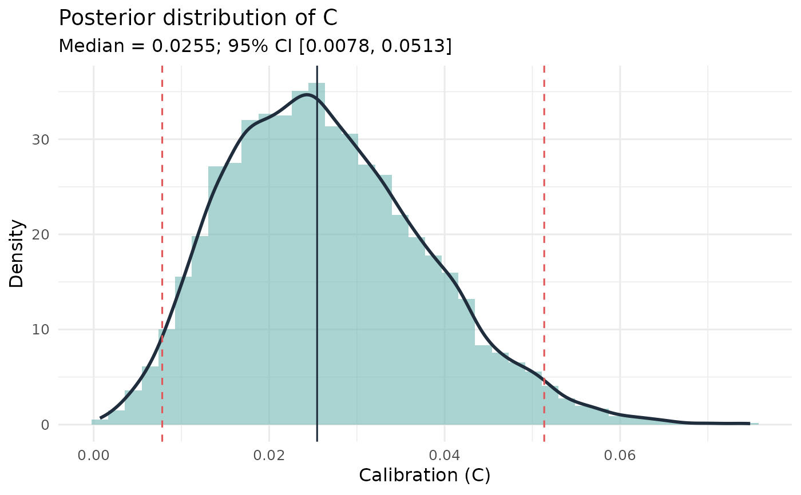

Bayesian Calibration Analysis (Beta-Binomial Model)
Source:R/calibration_bayes.R
calibration_bayes.RdComputes Bayesian posterior distributions for the calibration statistic C, over/underconfidence (O/U), and the Normalized Resolution Index (NRI) by placing independent Beta priors on the accuracy rate in each confidence bin.
Usage
calibration_bayes(
data,
confidence_bins = NULL,
choosers_only = TRUE,
lineup_size = 6,
alpha = 0.5,
S = 10000,
credible_mass = 0.95,
confidence_scale = c("auto", "0-1", "0-100")
)Arguments
- data
A dataframe with columns
target_present(logical),identification(character: "suspect", "filler", "reject"), andconfidence(numeric).- confidence_bins
Numeric vector of bin edges for confidence (e.g.,
c(0, 60, 80, 100)). IfNULL(default), treats each unique confidence level as its own bin.- choosers_only
Logical. If
TRUE(default), only suspect identifications are included (standard eyewitness calibration practice).- lineup_size
Integer. Number of lineup members (default 6).
- alpha
Prior concentration for the Beta prior on per-bin accuracy. Default 0.5 (Jeffreys). Named shortcuts:
"jeffreys","uniform","weak".- S
Number of posterior draws per bin. Default 10000.
- credible_mass
Width of equal-tailed credible intervals. Default 0.95.
- confidence_scale
How the confidence scale is interpreted: "auto" (default), "0-1", or "0-100". See
make_calibration_data.
Value
An object of class "calibration_bayes" containing:
- C_draws, OU_draws, NRI_draws
Posterior draws of each statistic.
- C_mean, C_median, C_ci
Posterior mean, median, and credible interval for C.
- OU_mean, OU_median, OU_ci
Same for O/U.
- NRI_mean, NRI_median, NRI_ci
Same for NRI.
- point_estimates
Frequentist C, OU, NRI from
make_calibration_data().- bin_data
Per-bin summary (n, n_correct, mean_confidence, accuracy).
- prior_alpha, S, credible_mass, n_total
Metadata.
Details
For each confidence bin \(j\) with \(n_j\) responses and \(k_j\) correct identifications, the posterior accuracy is: $$a_j \mid \mathbf{n} \sim \mathrm{Beta}(k_j + \alpha,\; n_j - k_j + \alpha).$$ For each posterior draw \(s\), the calibration statistics are computed: $$C^{(s)} = \sum_j \frac{n_j}{N}(c_j - a_j^{(s)})^2$$ $$OU^{(s)} = \bar{c} - \sum_j \frac{n_j}{N} a_j^{(s)}$$ $$NRI^{(s)} = \frac{\sum_j \frac{n_j}{N}(a_j^{(s)} - \bar{a}^{(s)})^2}{\bar{a}^{(s)}(1-\bar{a}^{(s)})}$$ where \(c_j\) is the mean confidence (proportion scale) in bin \(j\) and \(\bar{c}\) is the overall mean confidence.
References
Juslin, P., Olsson, N., & Winman, A. (1996). Calibration and diagnosticity of confidence in eyewitness identification. Journal of Experimental Psychology: Learning, Memory, and Cognition, 22(5), 1304-1316.
Brewer, N., & Wells, G. L. (2006). The confidence-accuracy relationship in eyewitness identification. Journal of Experimental Psychology: Applied, 12(1), 11-30.
Examples
set.seed(42)
n <- 200
conf <- sample(c(50, 70, 90), n, replace = TRUE)
tp <- sample(c(TRUE, FALSE), n, replace = TRUE)
ident <- ifelse(tp, "suspect", sample(c("suspect","filler","reject"), n, replace=TRUE))
df <- data.frame(target_present = tp, identification = ident, confidence = conf)
res <- calibration_bayes(df, confidence_bins = c(0, 60, 80, 100))
print(res)
#> Bayesian Calibration Analysis - Beta-Binomial model
#> n = 131; 3 confidence bins; prior alpha = 0.50
#> C (calibration): mean = 0.0266, median = 0.0255, 95% CI [0.0078, 0.0513]
#> O/U (over/underconf): mean = -0.1147, median = -0.1159, 95% CI [-0.1792, -0.0420]
#> NRI (resolution): mean = 0.0327, median = 0.0274, 95% CI [0.0014, 0.0947]
#> (Frequentist: C = 0.0239, O/U = -0.1214, NRI = 0.0219)
plot(res)
